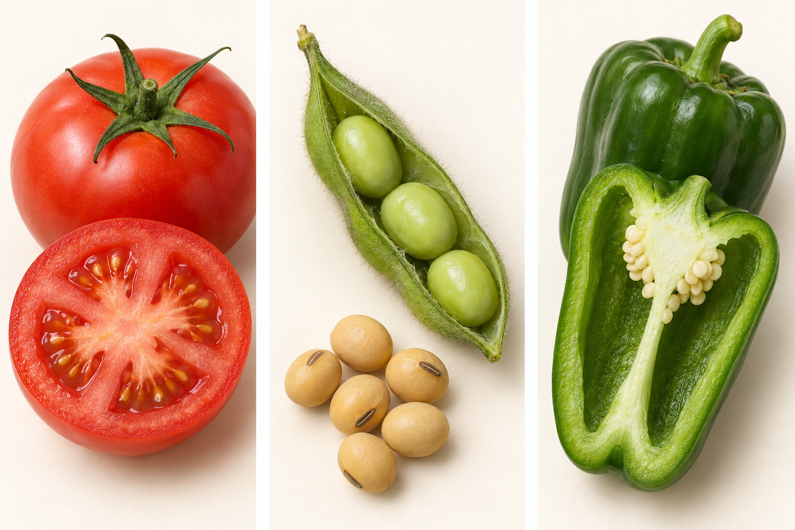
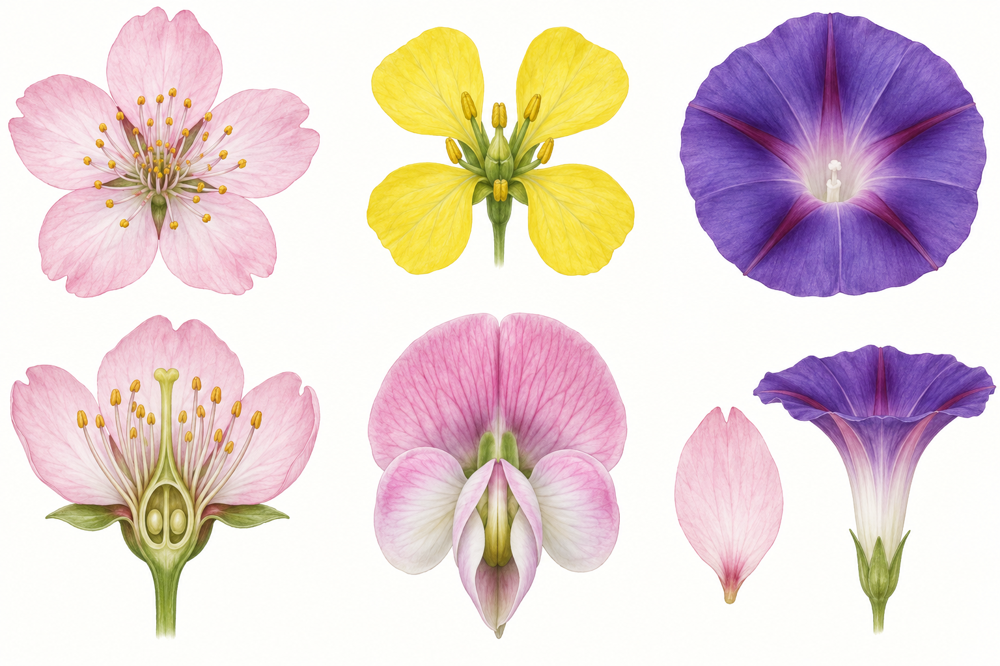
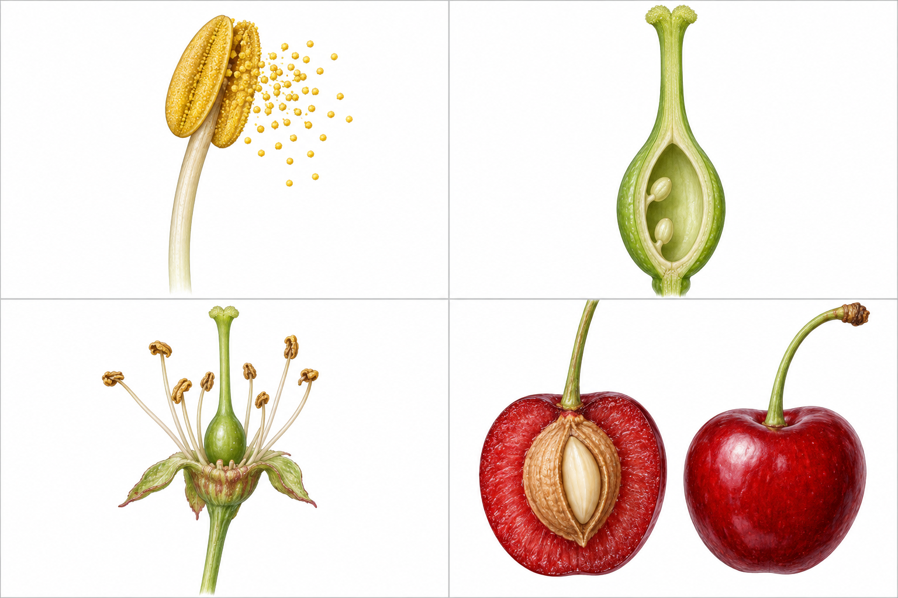
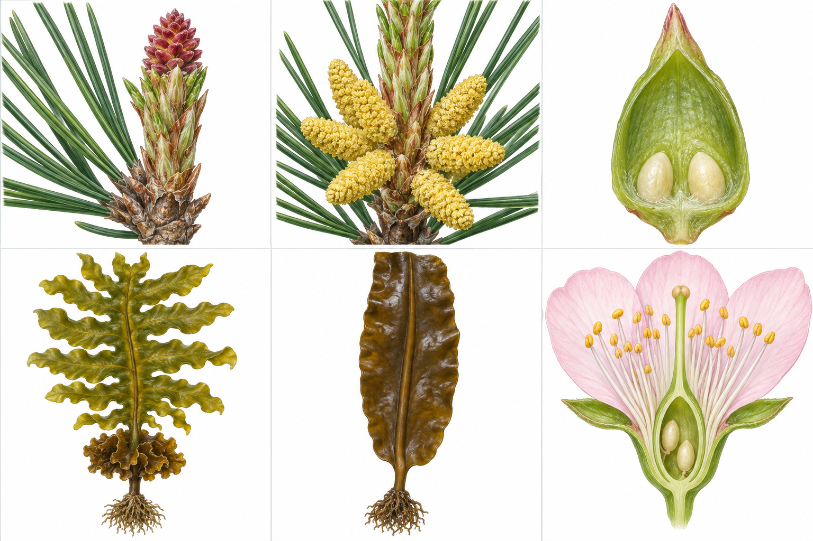
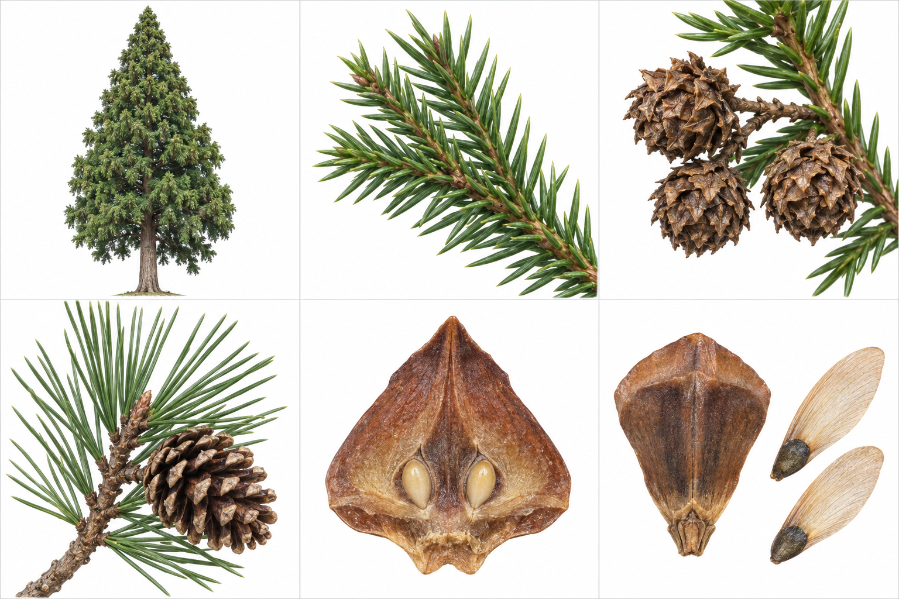
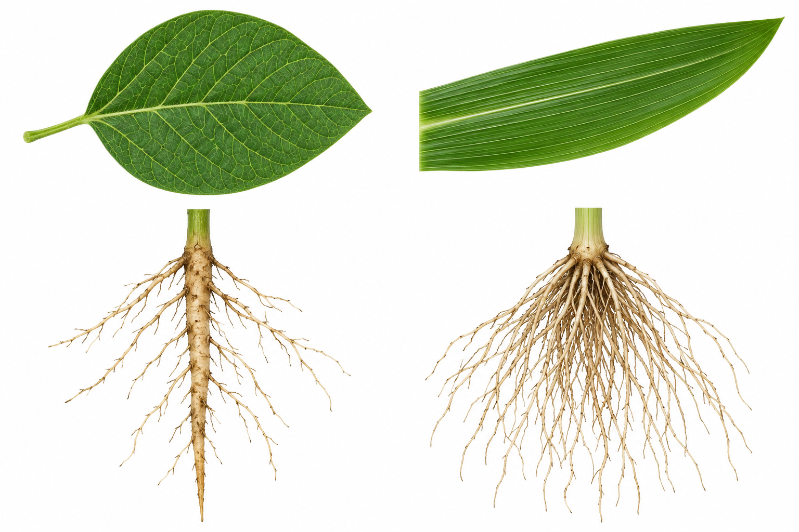
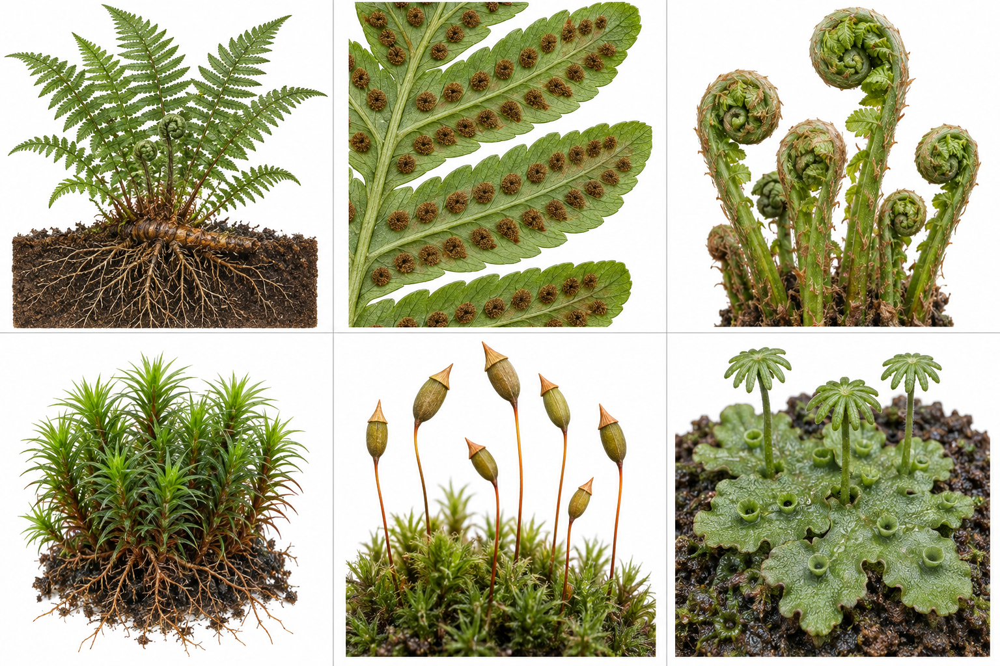
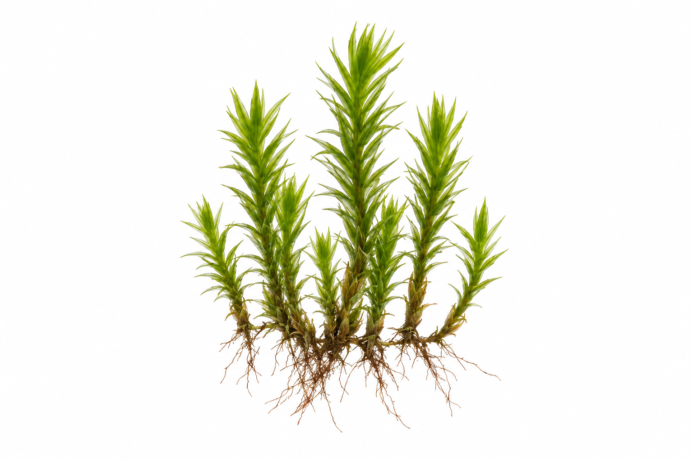

植物のなかま
身近な姿から、つくりを知る

この中の粒は、何だろう？
模式図・比較図（実物の大きさの比率とは異なります）
エダマメとダイズ、実は同じ植物
模式図・比較図（実物の大きさの比率とは異なります）
種子ができる前に、花がある


模式図・比較図（実物の大きさの比率とは異なります）
花を、正面から見てみよう
模式図・比較図（実物の大きさの比率とは異なります）
花を横から切って見る

模式図・比較図（実物の大きさの比率とは異なります）
おしべの先にあるもの
模式図・比較図（実物の大きさの比率とは異なります）
めしべの中にも、つくりがある
模式図・比較図（実物の大きさの比率とは異なります）
花粉が柱頭につくと
模式図・比較図（実物の大きさの比率とは異なります）
子房と胚珠は、何になる？
模式図・比較図（実物の大きさの比率とは異なります）
トマトも、花のあとにできる
模式図・比較図（実物の大きさの比率とは異なります）
花から、果実と種子へ
種子をつくる植物

模式図・比較図（実物の大きさの比率とは異なります）
公園のマツにも、種子がある
模式図・比較図（実物の大きさの比率とは異なります）
マツには、雄花と雌花がある
模式図・比較図（実物の大きさの比率とは異なります）
マツの胚珠は、包まれていない
模式図・比較図（実物の大きさの比率とは異なります）
種子植物を2つに分ける
「スギ」って、どんな木？
模式図・比較図（実物の大きさの比率とは異なります）
スギの小さな球果を見つける
模式図・比較図（実物の大きさの比率とは異なります）
芽生えの、最初の葉

模式図・比較図（実物の大きさの比率とは異なります）
被子植物を、子葉で分ける
模式図・比較図（実物の大きさの比率とは異なります）
葉の筋にも、違いがある

模式図・比較図（実物の大きさの比率とは異なります）
根を見ても、違いがある
模式図・比較図（実物の大きさの比率とは異なります）
ダイコンとネギを、根まで見る
模式図・比較図（実物の大きさの比率とは異なります）
葉と根を、セットでくらべる
花びらは、離れている？
模式図・比較図（実物の大きさの比率とは異なります）
取り外すと、違いがわかる
模式図・比較図（実物の大きさの比率とは異なります）
花の正面にも、形の規則がある
模式図・比較図（実物の大きさの比率とは異なります）
花をつけないシダは、どうふえる？

模式図・比較図（実物の大きさの比率とは異なります）
シダにも、根・茎・葉がある
模式図・比較図（実物の大きさの比率とは異なります）
山菜のこごみも、シダのなかま
模式図・比較図（実物の大きさの比率とは異なります）
足もとのコケを、大きく見る

模式図・比較図（実物の大きさの比率とは異なります）
コケも、胞子でふえる
模式図・比較図（実物の大きさの比率とは異なります）
コケの「根のようなもの」
模式図・比較図（実物の大きさの比率とは異なります）
シダとコケを、くらべよう
模式図・比較図（実物の大きさの比率とは異なります）
ワカメは、葉に見えるけれど
模式図・比較図（実物の大きさの比率とは異なります）
植物を分ける、3つの手がかり
植物の特徴を手がかりに分ける
種子をつくる
種子をつくらない
被子植物・裸子植物を合わせて「種子植物」。
中の粒から、植物を説明してみよう
模式図・比較図（実物の大きさの比率とは異なります）